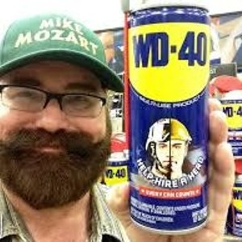

20 Cool Uses Of Coca-Cola (Drinking Isn't One of Them!)
Whether you are looking for a way to finally get rid of those pesky stains, or just want to find new ways to love this drink, these 20 jaw-dropping and unusual uses for Coca-Cola will blow you away.
These 29 Tattoos Are Astounding!
Today’s tattoo artists truly are connoisseurs of their craft, indelibly marking their clients with incredible works of art. Here are 29 favorites of our favorites.
17 Killer Kids That Won't Let You Sleep At Night...
In the last century, a new breed of killer kids has emerged, committing dreadful acts that even most adults can’t stomach. Click to watch these 17 of the worst that the best rehab and recovery in the world couldn’t claim to fix.

Did You Know About These Uses For WD40?
WD40 is a great tool for quieting hinges, loosening rusted bolts, and generally getting anything metal back into tip-top working shape. We were shocked when we read these alternative uses that enterprising folks have come up over the years!